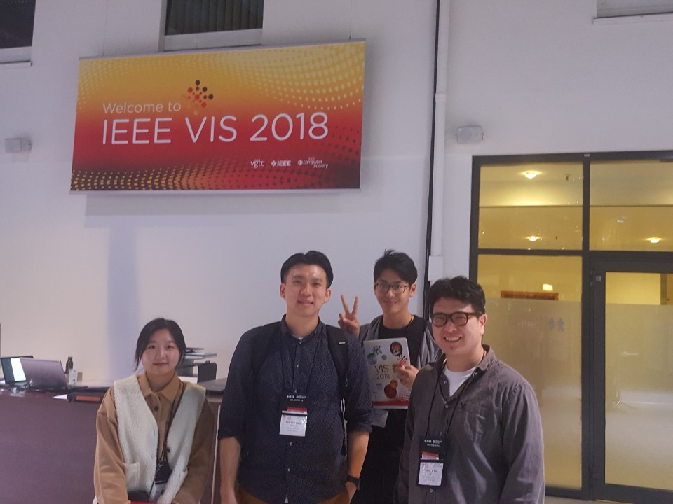

Move to Introduction Move to visual analytics
Hi, I am Dongyun Han
He is a Ph.D. student in the department of Computer Science at North Carolina A&T, NC, USA. He graduated from the UNIST(Ulsan National Institute of Science and Technology), with master and bachelors degree in Computer Science in 2020 and 2018 each. After graduation, he is currently working on a Doctor of Philosophy in Computer Science at North Carolina A&T. His research topic is HCI, especially on Data Visualization and Virtual Reality.
My formal CV is here (expected to update)
Mail Address: dhan@aggies.ncat.edu | dyhan113@gmail.com Webpage : dongyunhan.github.io/Handy/ Github : github.com/DongyunHan
Personal Information
- Date of Birth: 09/25/1991
- Nationality: Republic of Korea
- Available Languages: Native Korean, Intermediate English, Fluent Japanese, Basic Chinese
